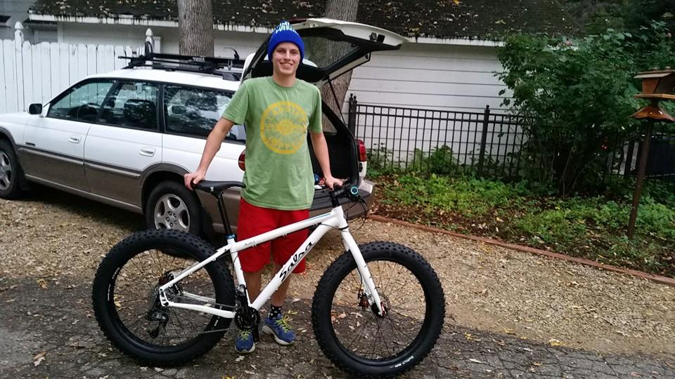
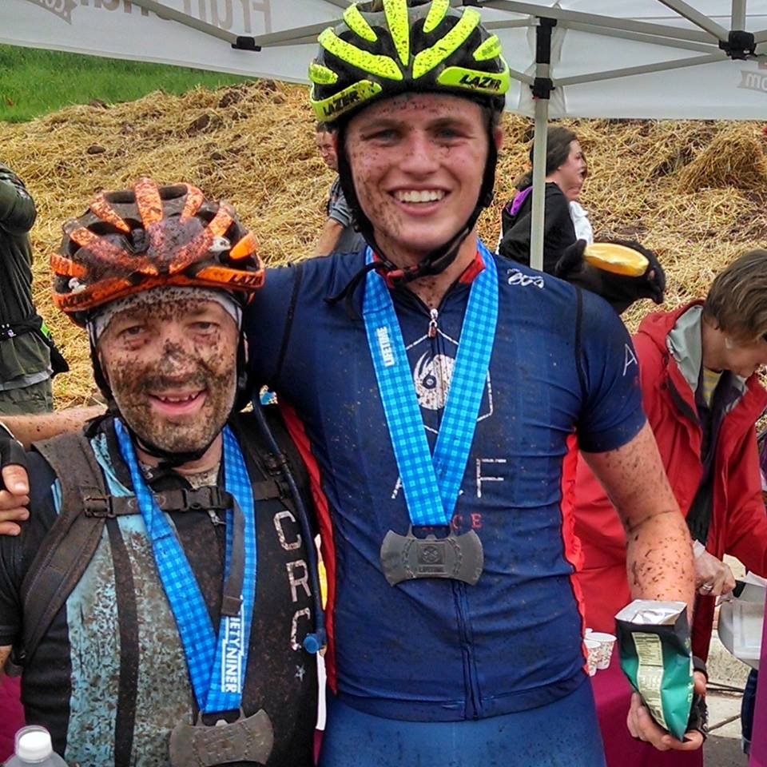
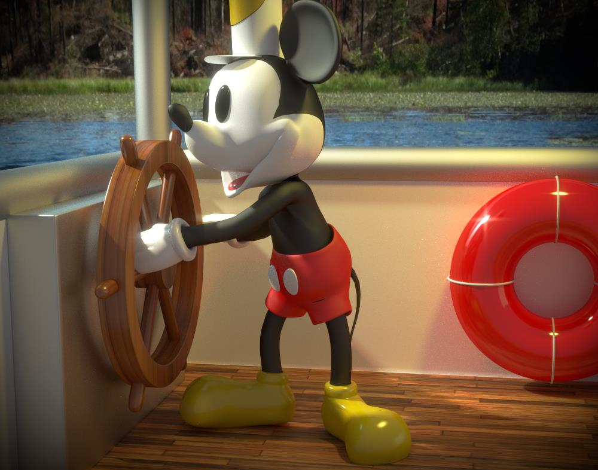
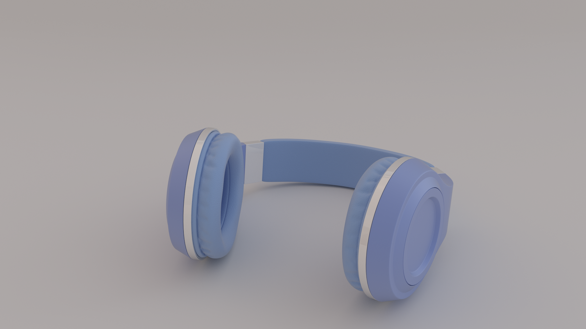
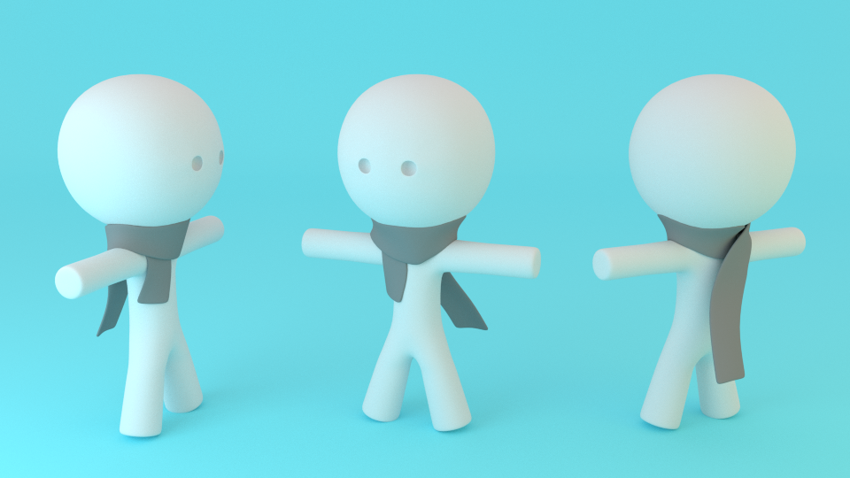
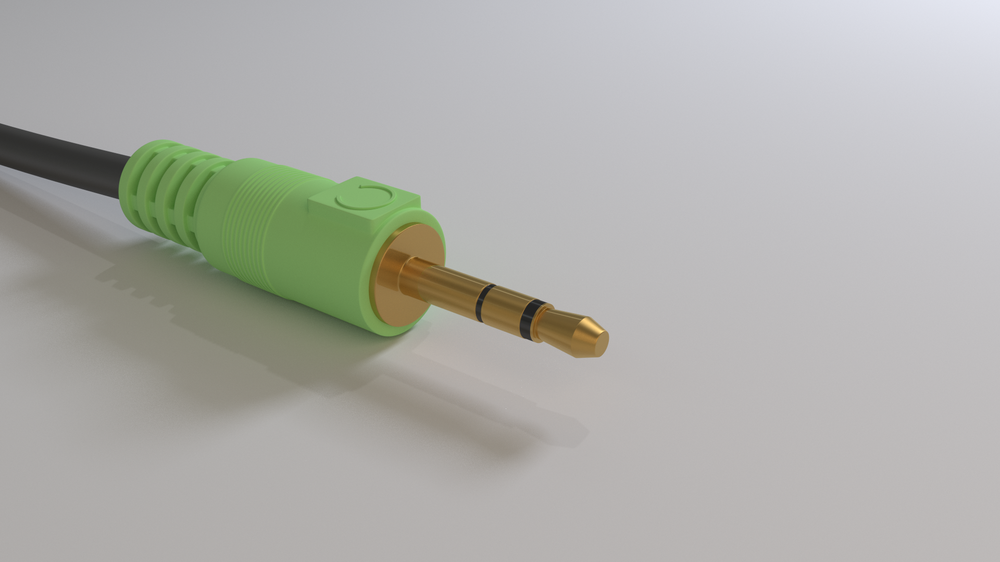

Who I Am
My name is Zach Newton. Biking and coding are what I love to do, just not at the same time.
- 
- 
I work as a Web Application Developer for Iowa State University. My favorite aspect of web development is definitely the front-end. While I know many people don't consider CSS to be coding (and it's really not, I agree), I find it incredibly fun to tweak the layout of a web page using CSS and JS to increase a users visual and functional experience.
A big hobby of mine is using 3D modeling software to create art such as desktop backgrounds or 3D printed figurines. I picked up Blender 3D back in middle school when I was very interested in game design where I could bring characters in my imagination to life.
- 
- 
- 
- 
This Site
I made this page to try out hosting a static page on GitHub pages. I also wanted to have some fun with styling!
Made in HTML, CSS, and JS (standard web page stuff)
Icons are from Font Awesome
Made in HTML, CSS, and JS (standard web page stuff)
Icons are from Font Awesome